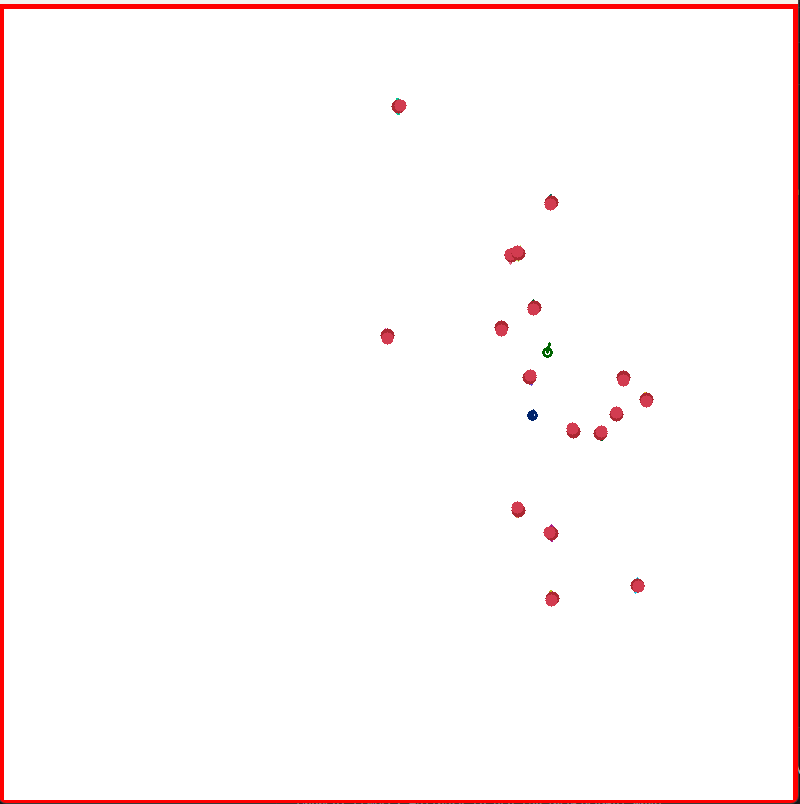

SiT to SocNav3 Converter

A Python command-line tool that converts sequences from the SiT dataset into the SocNav3 JSON format, enabling social navigation researchers to benchmark SiT's robot-captured pedestrian trajectories using SocNav3's existing evaluation ecosystem.
The tool implements a three-stage pipeline: loading SiT's raw sensor data, preprocessing trajectories by filtering stationary detections and computing velocity and orientation via finite differences, and exporting schema-compliant JSON output. Tested across eight SiT sequences covering indoor and outdoor environments, with six successful conversions producing 1,200 frames and 237 agent trajectories — all validated against the SocNav3 schema and verified in the official visualiser.
A LiDAR-based wall extraction module was developed and abandoned after testing revealed that the sensor's 60-metre range caused point clouds to extend beyond physical walls in indoor environments, producing unreliable boundaries. Trajectory-based boundary generation was used in production instead.
Tech: Python, NumPy, pytest, pypcd4